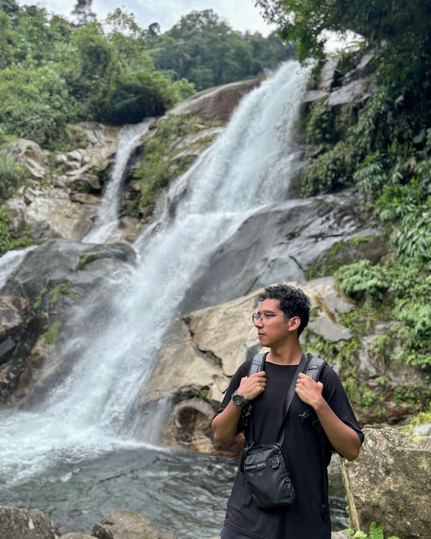

Daniel Canek Rosales Rosas | WDD 130
Hi, my name is Daniel, currently 26 years old... I like to hike and something that I like the most is watching movies. I love to work with computers, I'm not an experte but I really like to mess around to understand the way they work. Sometimes I even spend a lot of my time working with old computers and changing Linux Distros just for fun.